There are VITESS modules for 5 different evaluation procedures:
Elastic 1D
Inelastic
SANS
Elastic 2 that allows displaying the intensity as a function of scattering angle (x axis) and wavelength or TOF (y axis),
Elastic 2D that displays the data as a function of Qy and Qz.
Additionally, there is a module to analyze the runtime (of parts) of the simulation and one to determine the capture flux.
The module eval_elast is supposed to be used for elastic scattering (e.g. powder diffraction, SANS). The spectrum file will contain the neutron intensities counted for each channel of the evaluation interval (with respect to the evaluation parameter of interest).
There is an application which is useful especially for integrating the peak intensities of a powder spectrum within the evaluation interval.
The integrated intensities are given in the intensity file, the ranges have to be defined in the info file.
The info file has to be defined before running this module simply as a data file as follows:
Each integration range is defined with two numbers. The first number gives the centre of the integration interval (this corresponds e.g. to a powder peak), the second number defines the width of the integration interval. For each integration range a new line must be used.
Example:
0.1 0.2
0.3 0.1
First line means: integration between 0.0 and 0.2, the result of the integration refers to the interval centre 0.1.
Second line means integration between 0.25 and 0.35, the result of the integration refers to the interval centre 0.3. Maybe one needs information from the spectra file to define the info file appropriately. Then a first run only to generate the spectrum file is recommended.
Note: the info file ranges must be defined appropriately that they lie within the evaluation interval !
| Parameter Unit |
Description |
Range or Values |
Command Option |
| evaluation parameter | Choose between 'd-spacing', 'momentum transfer Q', 'scattering angle' and 'difference between wavelength from TOF and true wavelength'. | - | -k |
| spectrum file | The name of the spectrum file, which will contain the evaluated data, has to be given. | - | -o |
| intensity file | Optional: It will contain the integrated intensities for certain ranges within the evaluation interval defined above. The ranges and the range centres have to be defined in the info file. | - | -O |
| info file | Optional: It is needed to define the integration ranges for an intensity file (see explanation and example in the text above). | - | -I |
| number of bins | The number of bins determines the segmentation of the d-spacing, momentum transfer, scattering angle, or wavelength difference and therewith the number of values written to the spectrum file. | >= 1 | -n |
| minimum, maximum [1/Å] |
The bounds of the interval for the evaluation parameter. | >=0 max>min |
-m -M |
| increase to next bin [%] |
For a logarithmic binning the percentage has to be given by which the upper limit of each bin exceeds its lower limit. If this value is set, the parameter 'number of bins' is ignored | >0 | -R |
| dead-spot [deg] |
(optional) All neutrons with a scattering angle(2 θ) between 0 and dead-spot will not be considered in the evaluation. It is only useful if the direct beam points to the detector (as in the case of SANS) and the module 'beamstop' is not used. |
>= 0 | -d |
| probability weight |
yes: (default) the attributed probabilities (due to the operations of the modules before) are considered no : the probability weight of each neutron is considered with the weight 1 |
'yes', 'no' | -p |
| exclusive counts |
yes: only the evaluated neutrons will written to the VITESS output file (be considered by subsequent modules) no : all are written to the output file |
'yes', 'no' | -c |
| scattering axis of the sample | In case the elastic sample scatters in one direction only, like e.g., the surface of a liquid that scatters only in z-direction, please specify this particular scattering axis (y or z). For isotropic scattering choose 'none'. | 'none', 'y', 'z' | -A |
| time of flight |
yes: only those neutrons which have been monitored successfully (i.e. all properties are within the given ranges) are transferred to the subsequent module no : (default) all trajectories are transferred to the subsequent module |
'yes', 'no' | -w |
| correct TOF to distance |
yes: correct TOF for the flight path from sample center to the position of detection no : use the given sample-detector distance |
'yes', 'no' | -t |
| flight path [cm] |
(for option TOF): Length of the neutron flight path from point of t=0 setting (source or pulse shaping chopper) to detector | > 0 | -l |
| sample-detector distance [cm] |
nominal distance from sample to detector | > 0 | -D |
| time offset [ms] |
(for option TOF) global shift of the neutron time t -> t - t_offset. It is used to shift the reference point for the time of flight analysis (e.g. by half the length of a long pulse). | >= 0 | -T |
| reference wavelength [Å] |
(for option: 'No TOF') The (average) wavelength set by velocity selector or monchromator This module does not use the wavelenghth of the trajectory for data evaluation, but (as in real life) the wavelength given here. |
> 0 | -r |
| time interval begin/end [ms] |
(optional) The bounds of the time interval for the evaluation. Only neutrons arriving in that time interval are considered in the evaluation, both for TOF and continuous instruments. |
>=0 end>begin |
-e -E |
| colour | Only trajectories of the given color are evaluated. Color -1 or 'nothing' means: all trajectories are evaluated | >= -1 | -C |
This module supports the evaluation of the simulated inelastic scattering data for general prototypes of instruments:
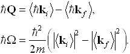
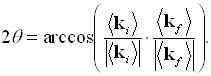
The integral is written by this module to the log file (shown automatically in the Xcontrol window) as "INTEGRAL INTENSITY".
For the simulation of Triple Axis Spectroscopy or monochromator-analyser backscattering instruments, the user has to scan the incident and/or scattered neutron wavevectors, and to collect the integral intensity data for each single point (q,w), as in real experiments. For this case only the integral written to the log file is the output of interest, therefore no names for the 'TOF and energy spectrum files' should be given as an input, in order not to create them . All other input values or options excepting 'angle' and 'angle range' are not considered for calculating the "Integral Intensity", i.e. you can give some dummy values (e.g. 'divide by Bose factor' is not considered although if it is activated in the GUI).
These two cases comprise direct and inverted geometry instruments in which either the initial or the final average wavelength is selected by a crystal, chopper or other selector system. This wavelength has to be given in the input as "reference wavelength".
It generates 6 output files, one for each possible neutron spin state after scattering.
| Parameter Unit |
Description |
Range or Values |
Command Option |
| TOF spectrum file spin up | Filename for the TOF spectrum datafile of neutrons with spin up. | -E | |
| energy spectrum file spin up | Filename for the energy spectrum datafile of neutrons with spin up. | -G | |
| geometry | Choose geometry type of the TOF instrument. | 'direct' or 'inverted' | -A |
| correct TOF to distance | direct geometry only: correct TOF for real flight path length from sample to detector | 'yes' or 'no' | -t |
| primary and secondary flight path [cm] |
Distance from the moderator to sample and from sample to detector. | >= 0 | -a -b |
| reference wavelength [Å] |
Initial or final wavelength of the neutrons which is known from the experimental setup. | >= 0 | -c |
| time offset [ms] |
If nonzero, start time at moderator is shifted: TOF' = TOF time offset. | -d | |
| number of bins |
The number of time and energy channels to be considered | >= 0 | -C |
| minimal and maximal energy transfer [meV] |
The energy transfer range in which the user is interested to bin intensities. If this range is not given it will be calculated from the TOF range. |
-m -M | |
| minimal and maximal time [ms] |
The TOF range in which the user is interested to bin intensities. If this range is not given it will be calculated from the energy transfer range. |
-e -g | |
| gradient of timebins [-] |
Derivative s of the time channel width in function of TOF (as described below). | -h | |
| angle and angle range [-] |
The user can select those neutrons which cross a smaller area on the detector surface by giving the angular position ('angle' relative to the X-axis) and width ('angle range') of a window in horizontal direction. In vertical direction no restriction is possible. | -j -k | |
| color | color necessary for the trajectory to be evaluated color -1 means: all trajectories are evaluated |
>= -1 | -f |
| TOF spectrum file spin down | Filename for the TOF spectrum datafile of neutrons with spin down. | -H | |
| energy spectrum file spin down | Filename for the energy spectrum datafile of neutrons with spin down. | -T |
For the case of constant channel-width spectra (number of bins: N), the TOF channel boundaries can be calculated in a simple way:
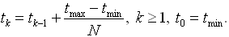
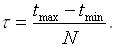
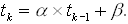
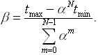
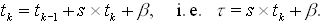
This module also transforms constant angle TOF data into constant angle energy spectra.
Generally in TOF measurements, the total flight time of the neutrons is measured. By knowing the primary, secondary flight path (L1,2) and the average neutron velocity either before (direct geometry) or after (inverted geometry) interacting with the sample, both the primary and secondary TOF can be calculated. The kinetic energies E1,2 before or after the scattering can be calculated from the reference (known) wavelength l (given in Å):
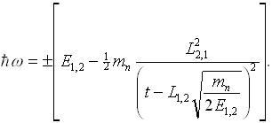
In order to obtain a correct intensity distribution in energy, one has to take into account the derivative resulting from the TOF-energy transformation
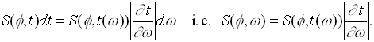
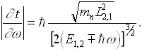
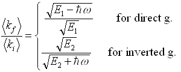
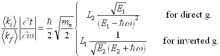
The module eval_sans delivers the function S(Q) or F(Q) of a SANS simulation. This has to be done in two steps:
In a first run, an isotropic scatterer is used; then the simulation with the sample is started.
The use of the isotropic scatterer is necessary to eliminate influences of the intensity distribution from moderator and instrument.
This reference file from the run with the isotropic scatter can be generated as S(Q) file by the module eval_sans using normalisation factor=1.0,
or by the module eval_elast using the option evaluation parameter=momentum transfer.
The reference spectrum needs the same binning as the S(Q) file.
The procedure is like that:
Assuming the SANS instrument is finished (including sample, detector and eval_sans),
you change the parameter scattering object in the parameter file of sample_sans to isotropic scattering.
(You might save this as an instrument of its own.)
Now you add eval_elast or change or add eval_sans as just described and start this simulation.
The output spectrum file of eval_elast or S(Q) file of eval_sans now contains the reference spectrum (of the isotropic scatterer).
If needs to be assured that this file will not be changed by the simulation using the sample, either by copying and renaming it or by using two instruments.
This file can now be used as the reference file in the eval_sans module. eval_sans will calculate I(Q) of the sample and deliver S(Q) as the ratio
Accordingly, all 3 file names have to be given for this calculation. If this is not the case, only the intensity file will be generated.
The intensity file will be updated after each bunch, the S(Q) file will only be calculated at the end of the simulation.
F_norm considers the different scattering probabilities of the SANS samples and the isotropic scatterer into forward direction (θ=0).
For the isotropic scatterer, the form factor F(Q) and the product (ρp-ρs)2 fp Vp are set to 1 (cf. 'sample_sans.html'.)
Therefore:
It is of the order of magnitude 10-4 to 10-3.
| Parameter Unit |
Description |
Range or Values |
Command Option |
| intensity file | The output file containing the intensity distribution I(Q) at the detector (of this simulation) This file is mandatory. |
- | -i |
| S(Q) file | The output file containing the result S(Q) calculated from this intensity distribution and that of the reference file as S(Q) = Fnorm * Ismpl(Q) / Iref(Q) (for the definition of Fnorm see below) Creating this file is optional. It requires the referencce file I(Q) obtained by running the same simulation with a isotripic scatterer. |
- | -S |
| reference file | The reference file contains the intensity distribution I(Q) at the detector for isotropic scattering obtained in an earlier run. This is only needed if the output S(Q) is wanted |
- | -I |
| number of bins | The number of bins determines the segmentation of the momentum transfer and therewith the number of values written to the S(Q) file. | >= 1 | -n |
| minimum, maximum [1/Å] |
The bounds of the interval for the evaluation parameter Q. | >=0 max>min |
-m -M |
| increase to next bin [%] |
For a logarithmic binning the percentage has to be given by which the upper limit of each bin exceeds its lower limit. If this value is set, the parameter 'number of bins' is ignored | >0 | -R |
| dead-spot [deg] |
(optional) All neutrons with a scattering angle(2 θ) between 0 and dead-spot will not be considered in the evaluation. | >= 0 | -d |
| reference wavelength [Å] |
(for option: 'No TOF') The (average) wavelength set by velocity selector or monchromator This module does not use the wavelenghth of the trajectory for data evaluation, but (as in real life) the wavelength given here. |
> 0 | -r |
| normalization parameter |
The ratio of the intensity of the isotropic scatterer to that of the SANS sample in forward direction (θ=0)
The theoretical value is: F_norm = 1 / ((ρp-ρs)2 fp Vp F(Q)) |
>0 typical 1e-4 |
-p |
| time of flight |
yes: the wavelength is determined from the given flight path and the time-of-flight calculated for the trajectory no : the wavelength of all trajectories is supposed to be identical with the reference wavelength |
'yes', 'no' | -w |
| correct TOF to distance |
yes: correct TOF for the flight path from sample center to the position of detection no : use the given sample-detector distance |
'yes', 'no' | -t |
| flight path [cm] |
(for option TOF): Length of the neutron flight path from point of t=0 setting (source or pulse shaping chopper) | > 0 | -l |
| sample-detector distance [cm] |
nominal distance from sample to detector | > 0 | -L |
| time offset [ms] |
(for option TOF) global shift of the neutron time t -> t - t_offset. It is used to shift the reference point for the time of flight analysis (e.g. by half the length of a long pulse). | >= 0 | -T |
| time interval begin/end [ms] |
(optional) The bounds of the time interval for the evaluation. Only neutrons arriving in that time interval are considered in the evaluation. | >=0 end>begin |
-e -E |
| colour | (optional) Only trajectories of the given color are evaluated. Color -1 or 'nothing' means: all trajectories are evaluated | >= -1 | -C |
The module eval_elast2 is supposed to be used for elastic scattering (e.g. powder diffraction, SANS). The diffractogram or spectra file will contain the neutron probabilities counted for each segment of the evaluation interval (with respect to the evaluation parameter of interest). The following information has to be given as an input:
| Parameter Unit |
Description |
Range or Values |
Command Option |
| evaluation parameter | choose between scattering angle vs. wavelength and scattering angle vs. TOF | -k | |
| Sort by | choose the sort order in your data file. 4 parameters can be chosen, each of of them in ascending or descending order |
'Scattering angle', 'Wavelength/TOF', 'Intensity', 'Counts' | -s |
| Zeros |
Choose if zero entries shall be written to disk. Writing those results is considerably slower and may result in much bigger files. Memory consumption may increase significantly. |
'no', 'yes' | -f |
| spectra file | the name of the spectra file which will contain the evaluated data has to be given. | -o | |
| number of bins in X and Y |
The number of bins determines the segmentation of the scattering angle and wavelength or TOF direction. It is therewith the number of values written to the file. |
-n -m | |
| minimum, maximum X [deg] |
the bounds of the X interval for the evaluation parameter. | -x -X | |
| minimum, maximum Y [Ang] or [ms] |
the bounds of the Y interval for the evaluation parameter. | -y -Y | |
| increase to next bin X and Y | for a logarithmic binning the percentage has to be given by which the upper limit of each bin exceeds its lower limit. If this value is set, the given 'number of bins' is ignored. |
-R -S | |
| probability weight | if one deactivates the probability weight, each neutron is considered with the weight 1, otherwise (default) the attributed probabilities (due to the operations of the modules before) are considered. | 'yes', 'no' | -p |
| exclusive counts |
yes: only the evaluated neutrons will written to the VITESS output file (be considered by subsequent modules) no : all are written to the output file |
'yes', 'no' | -c |
| Scatt. angle selection | Selects the way how the scattering angle is determined | 'direction', 'position' | -D |
| time of flight | If the wavelength of the neutrons shall be determined by time of flight analysis (i.e. each wavelength is calculated from the flight path and the flight time), this option must be activated when using scattering angle vs. wavelength. | 'yes', 'no' | -w |
| correct TOF to distance | yes: correct TOF for real flight path from sample to detector | 'yes', 'no' | -t |
| flight path [cm] |
length of total neutron flight path, needed only for time of flight analysis. : global shift of the neutron time t |
-l | |
| sample-detector distance [cm] |
nominal distance from sample to detector | > 0 | -L |
| time offset [ms] |
Time offset: useful to shift the temporal reference point for the time of flight analysis | -T | |
| dead-spot [deg] |
only needed if the direct beam points to the detector (as in the case of SANS). All neutrons with a scattering angle(2 theta) between 0 and dead-spot will therefore not be considered in the evaluation. |
≥ 0 | -d |
| time interval begin, end ms |
the bounds of the time interval for the evaluation. Only neutrons arriving in that time interval are considered in the evaluation |
-e -E | |
| color, minColor, maxColor | either the exact color is needed for evaluation (0 is any) or the color has to be in the range between mincolor and maxcolor (-1 is any color range). | ≥ -1 | -C -a -A |
The module runtime counts the time it is running in its position in the pipe. It does not alter any neutron. Once the pipe is finished, the runtime module will add the time needed up to this pipe position to the log output.
None.
The module capture_flux (folder 'evaluate') calculates the capture flux (at any point of the instrument).
The capture flux method is used to determine absolute flux values in a beam line. A gold foil is introduced for some hours and the activation of the gold is measured.
As the absorption probability of neutrons rises linearly with wavelength, one does not get the real flux but the integral
Φcapture = ∫φ(λ) λ/λref dλ
(The reference wavelength is usually 1.798 Å.) This integral is calculated in the module thus allowing a direct comparison with measurements.
Reference wavelength, shape and size of the foil need to be given. Additionally, the wavelength range contributing to the capture flux can be limited.
| Parameter Unit |
Description |
Range or Values |
Command Option |
| reference wavelength [Å] |
reference wavelength in the capture flux definition, usually 1.798 Å (cf. text). If 0.0 is given, no reference wavelength is used |
>=0 | -R |
| window type | shape of the gold foil | 'circular' or 'rectangular' | -t |
| radius [cm] |
for circular foil: radius of the foil | >0 | -r |
| center y center z [cm] |
for circular foil: center y (horizontal) and z (vertical) of the foil | any | -y -z |
| min. y max. y [cm] |
for rectangular foil: minimal (right) and maximal (left) y value of the foil | any | -w -W |
| min. z max. z [cm] |
for rectangular foil: minimal (bottom) and maximal (top) z value of the foil | any | -h -H |
| min. lambda max. lambda[cm] |
minimal and maximal wavelength that is considered for the integration If minimal and maximal wavelength are zero this option is ignored |
>0 λmin<λmax |
-l -L |
Back to VITESS overview
vitess@fz-juelich.de
Last modified: 2021-07-22 KL